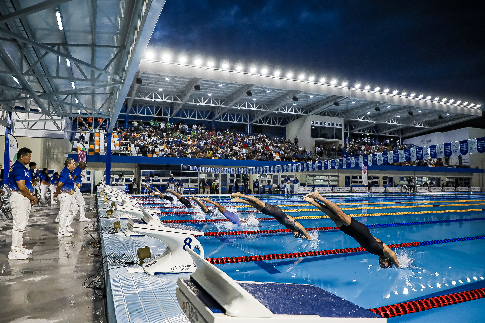

BCIE reafirma compromiso con los jóvenes atletas de la región
Como Banco Centroamericano de Integración Económica (BCIE) reafirmamos nuestro compromiso con los jóvenes atletas de la región para fomentar el deporte y promover estilos saludables a través del Programa de Construcción de Infraestructura y Rescate de Escenarios Deportivos a Nivel Nacional (PRODEPORTE) con que se han intervenido 9 escenarios deportivos salvadoreños que están siendo sede de los XXIV Juegos Centroamericanos y del Caribe 2023.

Este proyecto tiene como objetivo principal fomentar el deporte y promover estilos de vida saludables entre los salvadoreños, por ello, hemos brindado un respaldo financiero al país por un monto de US$115.2 millones, los cuales se están utilizando para la construcción y rehabilitación de importantes instalaciones deportivas que dejarán una huella profunda en las generaciones actuales y futuras.